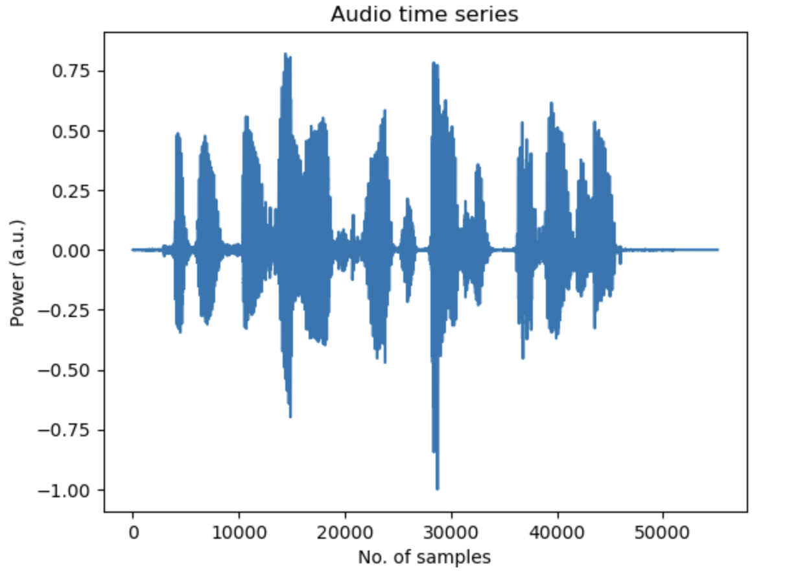
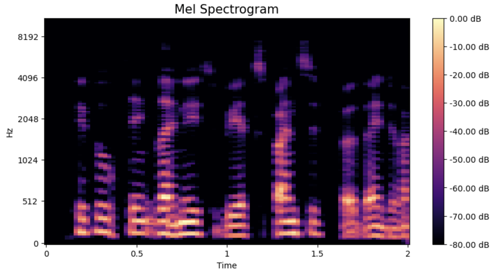
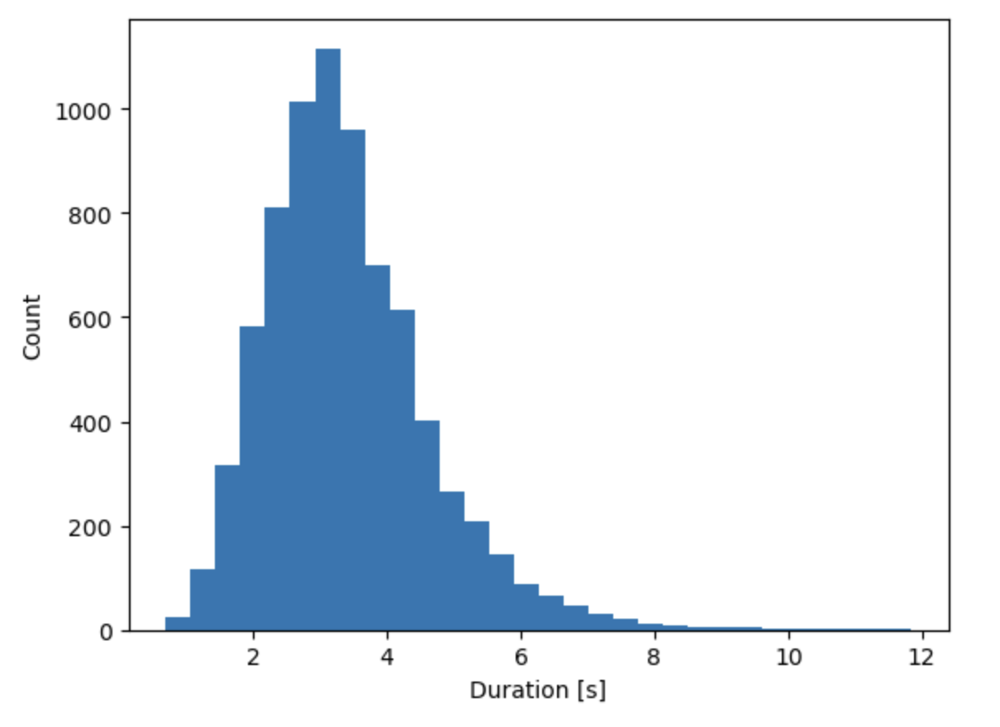
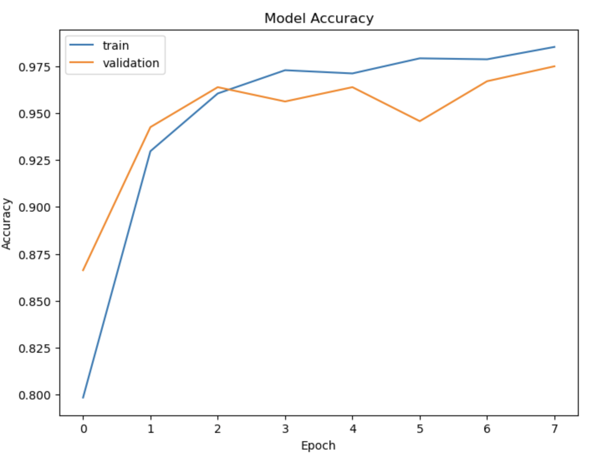
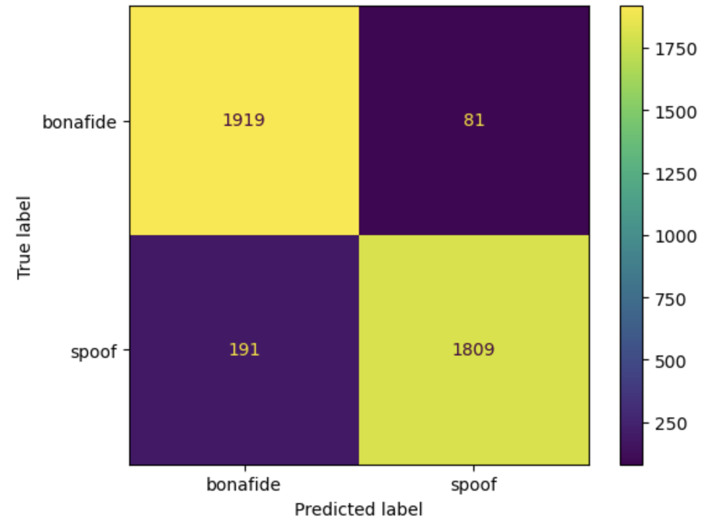
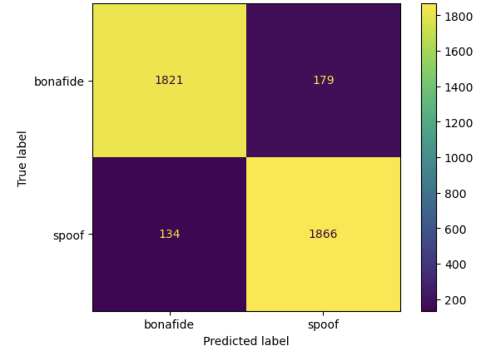
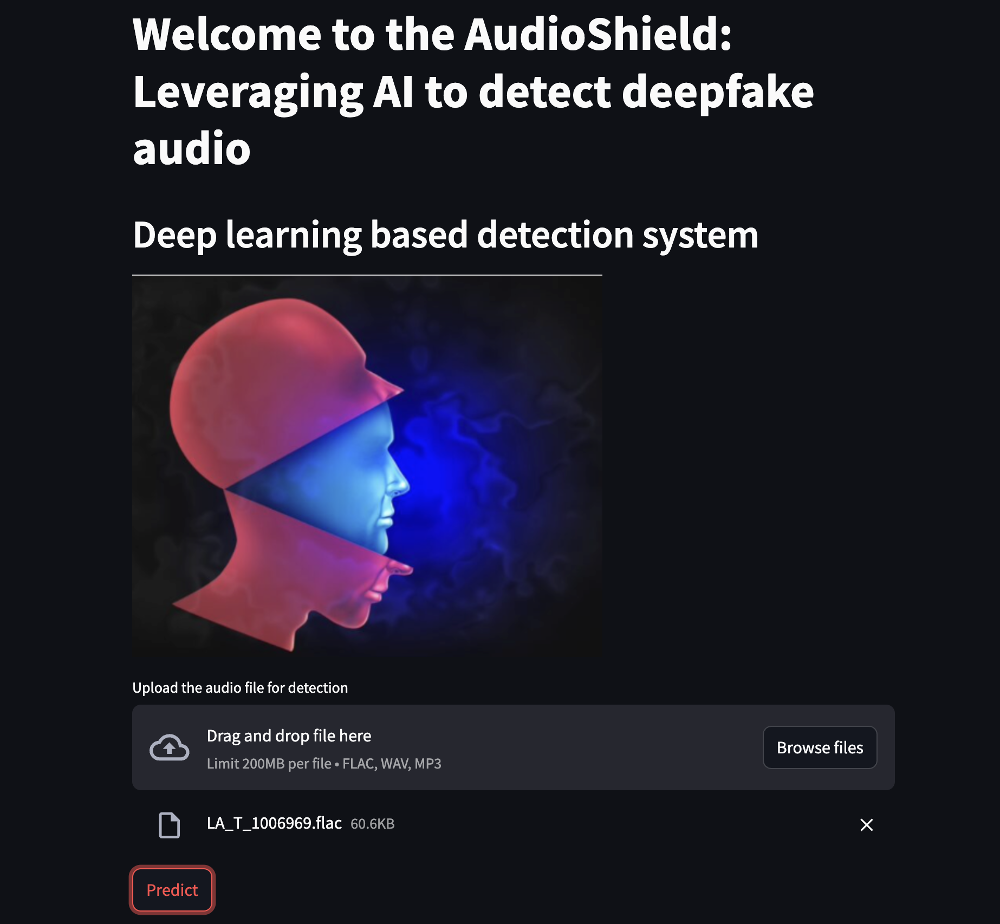

This project utilized python, numpy, pandas, matplotlib, librosa, scikit-learn, keras, tensorflow and digital signal processing
Motivation
Deepfake audio poses a significant societal threat due to its potential to deceive, manipulate, and cause harm in areas like banking, customer service, and voice authentication systems. This project focuses on developing deep learning-based models to detect different types of deepfake audio, which can prevent disinformation and security breaches.
Data Collection
The ASVSpoof 2019 English dataset was utilized, containing audio files categorized into training, development, and evaluation sets. Each of these datasets contain the audio data from different speakers and spoofing methods. The dataset for this work is stored in the dagshub repository under this link. The dataset includes genuine ("bonafide") and spoofed audio samples, generated using various voice-conversion (VC) and text-to-speech (TTS) methods.
Exploratory Data Analysis (EDA) and Preprocessing
In the EDA step, pandas was used for data aggregation and librosa library was utilized to visualize audio time series and extract spectrogram and Mel spectrogram features. This analysis revealed key features such as the duration and frequency content of audio files, allowing the extraction of relevant information for model development.
The initial dataset was imbalanced, with far fewer bonafide samples compared to spoofed ones. To avoid bias, the training dataset was balanced by randomly sampling equal numbers of bonafide and spoofed samples from the training dataset. Mel spectrograms (2D Fourier representations of the audio data) were extracted from the audio files to serve as input features for the deep learning models. The plots below show the time series (top) and the corresponding 2D Mel spectrogram of an audio sample (bottom).



Model Development
Two deep learning models based on Convolutional Neural Networks (CNN) were developed for this project:
- Simple CNN: A four-layer CNN was initially built with the following architecture. Convolution layers followed by max-pooling layers. Further, flattening and fully connected layers followed by a binary classification output (bonafide vs. spoofed). The model achieved a validation accuracy of 96% and a 0.96 F1-score on the cross-validation dataset for both classes.
-
ResNet50 : A more complex architecture known as ResNet50 was implemented, specifically trained on spectrograms. Due to the nature of the input data (single-channel spectrograms), the ResNet architecture was trained from scratch without using pre-trained weights. Due to computational limitations, the model was trained only for 7 epochs resulting in 97% accuracy and 0.97 F1-score for both classes on the cross-validation dataset.
The plot below shows the model accuracies on train and cross validation data during the training epochs.

Results
Both models were evaluated on balanced and imbalanced test data using metrics such as precision, recall, and F1-score. For the balanced test data, the simple CNN achieved a high accuracy of 93% and an F1 score of 0.93 for detecting spoofed and real audio. At the same time, the ResNet 50 model achieved 92 % accuracy and 0.92 score for both classes. When using an imbalanced dataset containing a large proportion of spoofed samples, the model performance metrics go down for the bonafide class. The plots below show the confusion matrix for the simple CNN model (left) and the ResNet 50 model (right) while evaluated using a balanced test data containing 2000 bonafide and spoof samples.


Model Deployment
The developed models were later deployed as a web application in the Streamlit cloud, Hugging Face, and AWS EC2. Below is what the app looks like and the link to the web application. Try to open in Google Chrome.
Conclusion
The project successfully developed two deep learning models capable of detecting deepfake audio with high accuracy and deployed them as web applications. The combination of EDA, feature extraction, and model architecture choices was critical in achieving these results.
The repository for the project can be found here and the notebook can be found at this link.